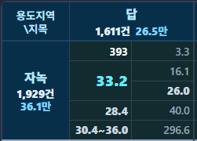

서두 · 학습목표
가운데 말고 다른 위치도 알 수 있을까요?
시험 점수를 크기순으로 놓으면 중앙값으로 가운데 위치를 알 수 있습니다. 그렇다면 아래쪽 25%를 가르는 점수나 위쪽 25%가 시작되는 점수는 어떻게 나타낼까요? 분위수를 쓰면 분포의 여러 위치를 함께 살펴볼 수 있습니다.
앞 장에서는 평균과 중앙값으로 중심을 읽었습니다. 이번에는 자료를 네 부분으로 나누는 사분위수와, 이를 그림으로 표현한 상자그림을 배웁니다.
- 분위수·백분위수·사분위수가 뜻하는 위치를 이해하고 값과 백분율을 구별합니다.
- Q1·중앙값·Q3를 구하고 IQR로 가운데 부분의 퍼짐을 설명합니다.
- 상자·수염·별도 점의 의미와 계산 규칙에 따른 차이를 읽습니다.
먼저 중앙값과 분포의 모양을 떠올려 보세요. 아래 그림은 값의 크기가 아닌, 작은 값부터 세었을 때의 비율을 나타냅니다.
분위수와 백분위 순위
25%라는 위치와 그 위치의 값을 구별합니다
p분위수는 작은 값부터 누적한 비율 p에 대응하는 값입니다. 0.25분위수는 25백분위수, 0.75분위수는 75백분위수입니다. ‘백분위수’는 비율을 100분의 몇으로 표현한 이름입니다.
예를 들어 75백분위수가 80점이면, 75는 분포 안의 위치를 지정하고 80점은 그 위치의 점수입니다. 점수가 평균보다 75% 높다는 뜻은 아닙니다. 분위수는 원래 변수의 단위를 갖습니다.
반대로 ‘80점은 전체에서 어느 위치인가’를 묻는 것은 백분위 순위에 관한 질문입니다. 같은 점수가 여럿이면 순위 계산 방식도 확인해야 합니다. 100·100·100·200에서 100보다 작은 값의 비율은 0%이지만, 100 이하의 비율은 75%입니다.
표본의 개수가 적거나 동점이 있으면 분위수를 경계로 정확히 그 비율의 관측이 나뉘지 않을 수 있습니다. ‘25% 위치를 요약한 값’과 ‘그 값 이하의 실제 개수’를 구별하세요.
사분위수 계산
중앙값으로 나누고 각 절반의 가운데를 찾습니다
Q1·Q2·Q3는 각각 25·50·75백분위수에 해당합니다. Q1은 제1사분위수, Q2는 중앙값, Q3는 제3사분위수입니다.
계산에는 앞 장의 공통 학습 예시 30건을 사용합니다. 실제 거래 출처는 확인되지 않았으므로 특정 시장을 설명하는 자료로 사용하지 않습니다. 전체 표와 원자료에서 값을 확인할 수 있습니다.
- 전체를 정렬해 가운데 두 값 120과 124의 평균을 구합니다. Q2=122입니다.
- 아래쪽 15건의 가운데인 8번째 값을 고릅니다. Q1=98입니다.
- 위쪽 15건의 가운데를 고릅니다. 전체의 23번째 값이므로 Q3=168입니다.
이 장은 두 절반의 중앙값을 Q1·Q3로 삼는 방식을 사용합니다. 홀수 개의 자료에서는 전체 중앙 관측을 제외하고 두 절반을 나눕니다. 다른 프로그램에서는 보간 방식에 따라 값이 조금 달라질 수 있습니다.
30건의 25%는 7.5건이지만 관측을 반 건으로 셀 수는 없습니다. 이 예시에서 98 이하는 8건이고, 98~168을 양 끝까지 포함하면 16건입니다. 상자가 가운데 50%를 요약한다는 설명을 경계 안에 언제나 정확히 절반의 관측이 들어간다는 뜻으로 읽지는 않습니다.
IQR과 상자
상자의 길이는 가운데 부분이 퍼진 정도입니다
사분위범위(IQR)는 Q3에서 Q1을 뺀 값입니다. 공통 예시에서는 168−98=70만원/㎡입니다. 상자의 양 끝을 Q1·Q3에 놓고, 안쪽 선을 중앙값에 그립니다.
상자가 짧으면 가운데 부분이 좁은 범위에 모여 있다는 뜻입니다. 양 끝의 값까지 모두 비슷하다는 뜻은 아닙니다. 이 예시의 IQR은 70이지만 전체 범위는 480−62=418입니다.
상자가 가로로 놓였으면 가로 길이, 세로로 놓였으면 세로 길이가 IQR입니다. 다른 방향의 두께는 보통 그림을 보기 좋게 정한 너비입니다. 두께로 표본 수를 나타내는 방식이라면 범례에 그 규칙을 밝혀야 합니다.
수염과 별도 점
수염을 어디까지 그렸는지 확인하세요
상자 바깥으로 이어진 선을 수염이라고 합니다. 수염을 최솟값·최댓값까지 그리기도 하고, 1.5×IQR 경계 안의 관측값까지만 그리기도 합니다. 같은 상자라도 수염 규칙에 따라 끝이 달라집니다.
공통 예시의 IQR은 70이고 1.5×IQR은 105입니다. 아래쪽 경계는 98−105=−7, 위쪽 경계는 168+105=273입니다. 경계 안의 실제 최솟값 62와 최댓값 268까지 수염을 그리고, 경계 밖의 480은 별도 점으로 표시합니다.
따라서 위쪽 수염 끝은 경계인 273도, 자료의 최댓값인 480도 아닌 268입니다. −7이라는 계산 결과는 음수 단가를 관측했다는 뜻이 아니라 규칙으로 정한 경계입니다.
이 과정의 이상치 표시 상자그림은 1.5×IQR 방식을 기본으로 사용합니다. 별도 점은 확인할 관측을 표시한 것이며 오류나 삭제 대상으로 확정한 것은 아닙니다. 처리 판단은 7장 ‘이상치와 IQR’에서 다룹니다.
집단 비교
같은 눈금과 규칙으로 중심과 퍼짐을 비교합니다
여러 반의 시험 점수처럼 집단을 비교할 때는 집단별로 사분위수를 구해 상자그림을 나란히 놓습니다. 같은 눈금과 계산 규칙을 써야 상자의 위치와 길이를 비교할 수 있습니다.
공통 예시의 주거·상업은 각각 15건입니다. 각 집단의 중앙 관측을 제외한 아래 7건과 위 7건의 중앙값으로 Q1·Q3를 계산했습니다.
주거 집단은 중앙값 105, IQR 120−88=32입니다. 상업 집단은 중앙값 168, IQR 235−124=111입니다. 이 자료에서는 상업 집단의 중심이 더 높고 가운데 부분도 더 넓게 퍼져 있습니다. 이를 용도만의 효과나 모든 시장의 차이로 넓혀 말할 수는 없습니다.
비교할 때는 표본 수와 수집 범위, 다른 조건도 함께 살펴봅니다. 상자가 겹치는지만 보고 통계적으로 유의한 차이인지 정할 수는 없습니다.
상자그림에는 봉우리나 빈 구간이 잘 드러나지 않습니다. 같은 값이 반복되면 상자가 선처럼 보일 수도 있습니다. 원래 점이나 히스토그램을 함께 보고, 상자가 좁다는 이유만으로 평균의 추정 오차까지 작다고 판단하지는 않습니다.
계산 관례의 차이
같은 자료도 계산법에 따라 조금 달라질 수 있습니다
표본 분위수에는 여러 계산법이 있습니다. 두 절반의 중앙값을 쓰는 방식 외에, 정렬한 값 사이를 비율에 따라 나누는 선형 보간도 사용합니다. 표본이 작거나 값 사이의 간격이 크면 차이가 눈에 띌 수 있습니다.
선형 보간 중 type 7은 1부터 세는 위치 h=1+(n−1)p를 사용합니다. n=30, p=0.25이면 h=8.25입니다. 8번째 값 98에서 9번째 값 102로 가는 간격의 25%를 더하므로 Q1=99입니다.
p=0.75이면 h=22.75이므로 160+0.75×(168−160)=166입니다. 앞에서 구한 Q1=98·Q3=168과 다르지만 계산 규칙이 다른 결과입니다.
프로그램의 숫자를 비교할 때는 원자료뿐 아니라 결측 처리, 가중치, 분위수 계산 옵션도 맞춰 보세요. 분위수 함수와 상자그림 함수가 같은 규칙을 쓰는지도 확인해야 합니다.
확인 문제
비율·경계·실제 값을 구별해 보세요
- Q1=98, Q3=168일 때 IQR과 위쪽 경계는 얼마인가요? 수염도 그 경계까지 그리나요?
답과 해설
IQR은 70, 1.5×IQR 위쪽 경계는 168+105=273입니다. 수염은 경계 안의 실제 최댓값인 268까지 그립니다.
- 75백분위수가 168만원/㎡이면 평균보다 75% 높다는 뜻인가요?
답과 해설
아니요. 75는 작은 값부터 누적한 비율의 위치이고, 168은 그 위치에 대응하는 단가입니다.
- 다른 프로그램에서 Q1=99, Q3=166이 나왔다면 오류일까요?
답과 해설
같은 자료에 type 7 선형 보간을 적용하면 그 값이 나옵니다. 먼저 원자료와 계산 규칙을 맞춰야 합니다.
CH2 Macro에서 읽기
오른쪽 열의 다섯 수치를 상자그림으로 옮겨 봅니다
아래 화면에서 오른쪽 열은 위에서부터 최솟값 3.3 → 25%값(Q1) 16.1 → 중앙값(Q2) 26.0 → 75%값(Q3) 40.0 → 최댓값 296.6입니다. 단위는 만원/㎡입니다. 옆 그림은 이 값으로 그린 상자그림입니다.

- 상자의 양 끝: 16.1과 40.0입니다. 가운데 부분의 범위를 보여 주며, IQR은 40.0−16.1=23.9만원/㎡입니다.
- 상자 안의 선: 중앙값 26.0에 놓았습니다. 왼쪽의 큰 숫자 33.2는 평균이므로 상자 안 중앙선의 위치로 쓰지 않습니다.
- 이번 그림의 수염: 제공된 최솟값 3.3과 최댓값 296.6까지 그렸습니다. 최댓값이 멀리 있어 전체 축에서는 상자가 짧아 보이므로 아래에 상자 부분을 따로 확대했습니다.
1.5×IQR 방식을 쓴다면 그림이 달라집니다. 표시값으로 계산한 아래·위 경계는 16.1−1.5×23.9=−19.75와 40.0+1.5×23.9=75.85입니다. 최댓값 296.6은 위 경계를 넘어 별도 점으로 표시할 값입니다. 다만 위쪽 수염은 75.85 자체가 아니라 그 이하의 실제 최댓값까지 그려야 하므로, 정확한 위치와 나머지 별도 점은 원자료가 있어야 알 수 있습니다.
분위수는 선택한 거래 집단의 위치와 퍼짐을 요약합니다. 다른 지역이나 기간과 비교할 때는 표본 조건과 분위수 계산법을 함께 확인하세요.
결론 · 학습 요약
상자는 위치와 퍼짐을, 수염은 정한 규칙을 보여 줍니다
분위수를 알면 중앙값 하나보다 자료의 구조를 더 자세히 읽을 수 있습니다. 다음 내용을 정리해 두세요.
- 분위수: 작은 값부터 누적한 비율에 대응하는 값입니다. 백분율과 원래 변수의 단위를 구별합니다.
- 사분위수: Q1·Q2·Q3는 각각 25·50·75백분위수이며, Q2는 중앙값입니다.
- 상자와 IQR: 상자는 Q1부터 Q3까지, 내부 선은 중앙값입니다. IQR=Q3−Q1은 가운데 부분의 퍼짐입니다.
- 수염: 최솟값·최댓값 방식인지 1.5×IQR 방식인지 확인합니다. 경계와 실제 수염 끝은 다를 수 있습니다.
- 비교 조건: 같은 단위·축·계산 규칙을 쓰고, 상자에 가려진 분포는 원자료나 히스토그램으로 보완합니다.
다음 6장 ‘분산과 표준편차’에서는 각 값이 평균에서 얼마나 떨어져 있는지를 이용해 퍼짐을 나타내는 방법을 배웁니다.
참고자료
- NIST/SEMATECH: Box Plot — 상자그림의 구성과 수염 규칙.
- R 공식 문서: Sample Quantiles — 분위수 계산 방식.
참고자료의 기존 확인일: 2026-10-07. 다섯 개 학습 그림 중 그림 1은 개념도입니다. 추가 상자그림은 캡처에 표시된 다섯 요약값으로 작성했습니다.